최신 사례06: 방송기 기절4초·다층 음파·경고등·불꽃. 프로토콜13. 아래 사례01~05는 당시 이력이다.
최신 사례05 최종 후속: 공기 대포 반경6m. 물체에 맞으면 섬광·공기 파편·입체 충격파가 표면 방향으로 터진다. 직선60m/s와 본인 발밑 상승 유지, 프로토콜12. 아래5m와 원 하나 연출은 이전 이력이다.
이전 사례05 직선 적용: 공기 대포는60m/s 직선 탄이며 바닥 적중 반경5m 안의 본인도 날아간다. 본인 발밑 정중앙은 상승만 적용한다. 프로토콜11로 실제 두 Editor에서 확인했다. 포물선·본인 제외 설명은 이전 이력이다.
이전 사례05 초기: 공기 대포는 중력탄이 착지한 지점의5m 범위 폭발이다. 서버 판정과 프로토콜10으로 멀티를 검증했다. 아래 사례01~04는 변경 당시 이력이다.
이전 사례04:5종 모두 기능 연결 완료. 공원 일렬 테스트 행에서 E 즉시 장착·좌클릭 사용·2초 재출현. 구명조끼5초 면역과 배터리8초 무한 스태미나·이속30%도 적용했다. 앞선 사례의 미적용 설명은 당시 이력이다.
이전 사례03: 사례03에서6개 FBX Unity 임포트와 공원1개 테스트 택배,3종 시작 장비 및 멀티 동기화를 완료했다. 아래 사례01과02의 미적용 설명은 작성 당시 이력이다.
취급주의 아이템 다섯 종 블렌더 디자인
2026년10월19일 사례01 R01 디자인 제작 완료
앞서 정한 취급주의 아이템5종을 열린 Blender에 편집 가능한3D 모델로 제작했다. 기존 아이콘의 색과 역할을 유지하면서 실루엣·재질·부품 구성을 통일했다. 이번 결과는 디자인 시안이며 Unity 임포트와 신규 효과 구현은 별도 작업이다.
사용자는 켜 둔 블렌더에서 강력한 아이템5개를 디자인해 달라고 요청했다. 기존에는 아이콘 시트만 있었고 연결된 Blender에는 기본 Cube·Camera·Light만 있어 편집 가능한 아이템 모델이 없었다.
원래 Scene과 기존 객체를 보존하고 MDS_SpecialItems_Design_v1 장면을 추가했다. native mesh의 연속 외피·회전체·부품과 비파괴 Bevel을 사용했다. 각 아이템을 독립 루트 아래에 묶어 색·형태·부품을 수정할 수 있게 했다. 이미지 평면을 모델처럼 세우거나 유료3D 생성을 사용하지 않았다.
루트5개·부품99개를 확인했다. 기본 메시의 nonmanifold edge와 음수 체적 오류0, 미완성 대체 상자0, 샘플 프레임의 카메라 밖 부품0이다. 각 모델의 바닥 접촉 오차는0m다. 1·24·48·96·144프레임에서 루트만 좌우 약12도 회전하며 위치가 고정되고 처음·끝 자세가 일치한다. 실제 카메라와 viewport, 조명 분리·흑백 출력과 모션 샘플을 열어 확인했다.
표의 삼각형 수는 Bevel과 곡선 평가를 포함한 현재 디자인 장면 기준이다. 엔진용 병합·재질 축소·UV·충돌체·손 장착·기능 애니메이션·멀티 테스트는 하지 않았다. 구명조끼5초 면역과 배터리8초 무한 스태미나·이속30%는 기존 기획이며 그림 속 표시는 게임 구현의 증거가 아니다.
사용자가 저장을 요청하지 않아 활성 .blend 경로는 빈 상태로 유지했다. Blender 스킬의 broad edit 복구 규칙에 따라 work/blender-special-items/checkpoint_final_audited_design_20261019.blend 복구 사본을 남겼고, 새 장면을 열린 Blender의 현재 화면으로 유지했다.
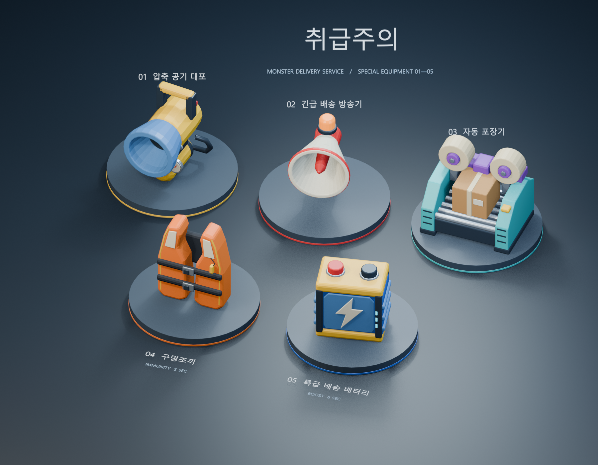
기존 강력한 아이템5종 디자인 장면에 취급주의 택배도 하나 추가해 달라는 요청이다. 기존에는 특수 배송용 상자가 없었다.
독립 루트 HERO_FragileParcel 아래에 갈색 외피·뚜껑·노란 경고 테이프·검정 사선·빨간 취급주의 글자·파손주의 기호·위쪽 화살표·운송장과 바코드·모서리 보호대를 native mesh와 font로 만들었다. 기존5종의 메시를 보존하고 아래쪽 전시 위치만 옮겨3열2행으로 배치했다.
상자1개와 편집 부품56개를 추가했다. 크기 약1.300×1.233×1.288m, Bevel 평가 후 메시6032삼각형이다. 메시 경계·체적 오류0, 바닥 접촉 오차0m,1·48·96·144프레임에서 카메라 밖 부품0이다. 루트만 회전하고 위치는 고정되며 처음과 끝 자세가 같다. 기존 아이템 메시 좌표 변경0을 수정 전 스냅샷과 대조했다. 실제 상세·전체·모션 렌더를 열어 확인했다.
Blender 디자인 단계다. 게임 임포트·획득·개봉·희귀 아이템 생성이나 네트워크 구현은 하지 않았다. 활성.blend 경로는 유지했고 work/blender-special-items/checkpoint_final_fragile_parcel_20261019.blend에 복구 사본을 남겼다.
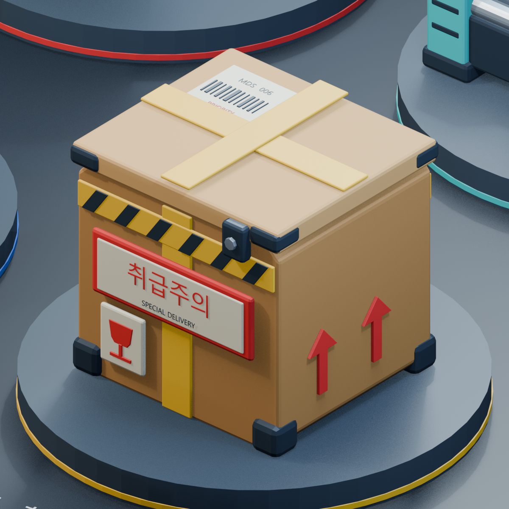
초기 상자의 한글·영문·배송 코드·PRIORITY 글자4개를 제거하고 운송장 패널·바코드·긴 경고문 판도 뺐다. 기존 잔 모양 파손주의 마크를2.15배 키워 앞면 가운데 배치했다. 위쪽 화살표·노란 검정 경고 띠·밀봉 테이프·모서리 보호대를 유지했다. 상자 바깥의06번 전시 설명도 숨겼다. 기존5종과3열2행 배치는 유지한다.
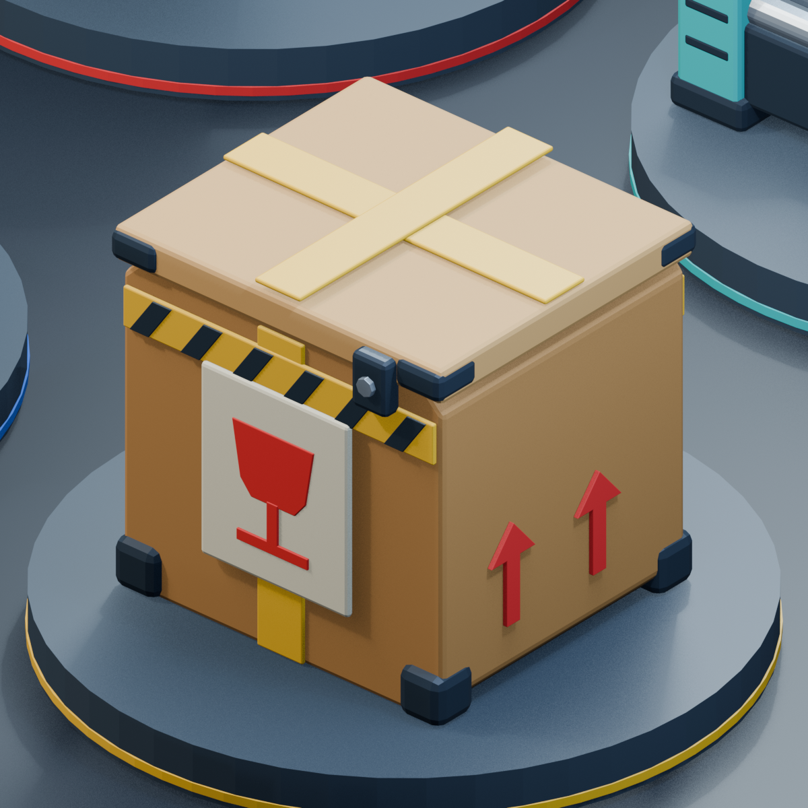
Blender의 모델을 FBX로 Unity에 넘기고 중앙 공원에 취급주의 택배1개를 테스트로 리스폰하며, 강력한 아이템3개를 장착한 상태로 시작해야 한다.
수정 전에는 Blender 디자인만 있었고 Unity에는6개 모델의 FBX·장착 프리팹·특수 택배·신규 아이템 종류가 없었다. 기존 라운드 초기화는 세 슬롯을 모두 비웠다. 수정 전 게임 화면은 없으며 코드와 장면 사본을 보존했다.
각 모델을 평가 메시1개로 병합한 정적 FBX로 내보내 metre 크기와 재질 이름을 유지했다. Unity에서6개 모델의 축·크기를 대조하고 재질을 리맵했다. 첫3종에 손 장착 프리팹과 실제 모델에서 렌더한 HUD 아이콘을 연결했다. 기존 사용 횟수·피격·넉백·기절·에어캡·면역 처리와 네트워크 입력 경로를 재사용했다.
SampleScene 중앙 공원 석재 광장 (0.35, -0.04, 13.25)에 Park_SpecialDelivery_TestParcel1개를 저장했다. E로 열면 첫3종 중1개를 같은 확률로 지급하고10초 후 같은 자리에서1개만 돌아온다. 슬롯이 가득 차면 수집되지 않는다. 서버만 수집과 타이머를 처리하고 참가자는 스냅샷을 적용하므로 동시 수집으로 보상이 복제되지 않는다. 일반 아이템100스팟·50개와 네 모서리 플레이어 스폰은 유지했다.
공원 택배의 SpecialDeliveryParcel.testLoadout=true인 동안 탐색 시작·새 경기·호스트와 참가자 모두 공기 대포·긴급 배송 방송기·자동 포장기를 각1회 받는다. 끄면 기존 빈손 시작으로 돌아간다. 1·2·3으로 선택하고 좌클릭으로 사용하며 G로 버린다. 반동0.6초가 끝나면 마지막 사용 슬롯과 모델이 사라진다.
Unity6000.5.10f1 실제 Play 검사31항목과 FBX 임포트7항목을 통과했다. 별도 MPPM Unity Editor와 localhost로 연결해 호스트9·참가자10항목을 통과했다. 편도60ms 인위 지연과 매5번째 frame/input 전송 누락 조건에서3종 시작 장비·참가자 발사·원격 장착·포장 표시·동시 E 수집·10초 재출현을 확인했다. 양쪽 경기 중 오류0이며 실제 WAN 검사는 아니다.
표의 신규 효과 수치는 이번 테스트 기본값이며 최종 밸런스 확정값은 아니다. 프로토콜8이므로 모두 같은 소스를 사용해야 한다. 구명조끼와 배터리는 모델·아이콘 임포트까지 완료했고 효과·장착 아이템 풀에는 아직 연결하지 않았다. 5분 경기·1분마다 정기 출현은 이번 테스트에 포함하지 않았다. 배포 실행 파일 재빌드와4인전·외부망 검사는 미실행이다.
첫 광장 좌표가 석재 타일 사이 틈에 걸려 바닥 확인이 실패해 실제 타일 위 좌표로 수정했다. 새 검사 스크립트의 부분 새로고침은 메뉴를 등록하지 못해 전체 임포트 후 재실행했다. 실제 화면에서 새 FBX의 앞 방향이 기존 모델과 다름을 확인해 +Z로 보정하고1인칭 크기를0.75배로 줄였다. 참가자 Editor의 기존 UnityPipeline DLL·websocket 초기화 진단은 시험 시작 전 환경 메시지이며 경기 중 오류는0이었다.
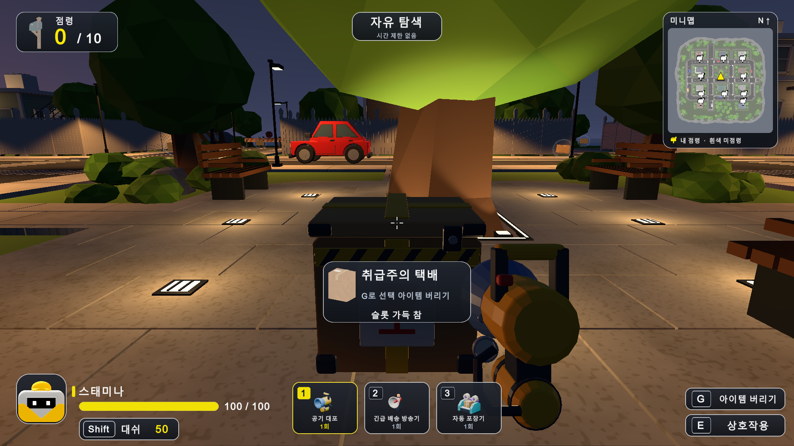
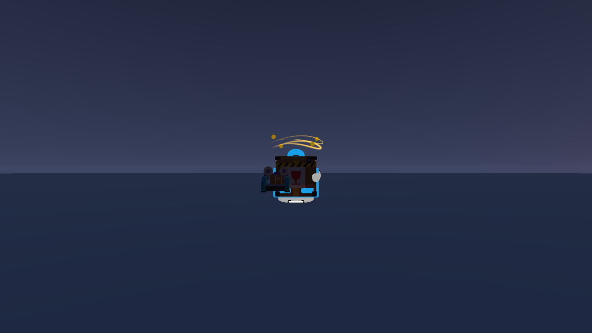
사용자는 진행 중인 작업을 마무리하고 나머지 아이템2개도 Unity로 옮긴 뒤 강력한5종을 공원에 일렬로 놓아 주운 즉시 테스트할 수 있게 해 달라고 요청했다.
직전 사례03에서는 공기 대포·방송기·포장기3종만 기능을 연결했고, 구명조끼와 배터리는 모델·아이콘만 임포트한 상태였다. 공원 택배는 무작위 지급 방식이라 원하는 아이템을 즉시 고를 수 없었다. 실제 멀티 검수에서 탐색용 상대의 에어캡 시연 코드가 네트워크 상대에게도 자동 적용되는 결함을 발견했다.
남은2종에도 손 장착 프리팹과 사용 경로를 연결했다. SpecialDeliveryParcel의 고정 아이템과 stable spawnId를 재사용해 공원 석재 광장 북쪽 z24.8에5종을2.1m 간격으로 배치했다. 왼쪽부터 대포·방송기·포장기·구명조끼·배터리다. 각 아이템 이름과 해당 HUD 아이콘을 표시한다. BubbleWrapFX와 RunningShoesFX의 상대 자동 시연은 NetworkScreens=false인 혼자 탐색에서만 실행하도록 제한했다.
테스트 행은 E로 주우면 빈 칸 또는 현재 선택 칸에1회짜리 아이템을 넣고 즉시 선택한다. 세 칸이 가득 찼으면 선택 칸만 교체하므로 G로 먼저 비울 필요가 없다. 사용은 좌클릭이다. 각 모델은 수집 후2초 뒤 같은 자리로 돌아오며, 서버만 수집·교체·시간을 확정한다. 기존 취급주의 택배1개는10초 리스폰으로 유지하고 지급 후보를5종으로 확장했다. 시작 장비3개와 일반100스팟·50개, 네 모서리 랜덤 시작은 유지한다.
아이템별 재출현 타이머6개와 면역·배터리 잔여 시간을 기존 스냅샷에 추가하고 프로토콜9로 올렸다. 구명조끼는 상대 몸에 실제 FBX 모델로 표시하며 배터리는 기존 속도 오라를 재사용한다. 본인 HUD에 면역 초수, 무한 스태미나, 속도30%와 배터리 잔여 초수를 표시한다. 방 나가기는 Shutdown 요청 직후 객체를 삭제하던 순서를 바꿔 ShutdownInProgress가 끝난 다음 NetworkManager를 정리한다.
실제 Unity Play의5종 획득·교체·사용·면역·이동 검사45항목과 임포트8항목을 통과했다. 별도 Editor 두 프로세스 localhost에 편도60ms 지연과20% frame/input 누락을 넣고 호스트13·참가자13항목을 통과했다. 실제 참가자의 E 수집,2초 재출현,5초 면역 중 방송기·대포 차단 및 종료 후 피격, 배터리8초와5회 무료 대시·종료 후 소모 복귀를 확인했다. 양쪽 시험 중 런타임 오류0이다. 멀티 상대에게 자동 에어캡·러닝화가 생기지 않는 회귀 검사2항목도 포함한다. 종료도 호스트2·참가자2항목을 별도로 통과해 네트워크 객체 정리와 종료 중 오류0을 확인했다.
첫 추가 검사는 이전 강화 검사 인자로 실행했던 참가자 Editor의40초 자동 종료와 겹쳐 중단됐으며 실패 로그를 first-interrupted에 보존했다. 이전 실행 인자와 자동 실행 코드를 확인한 뒤 자동 검사 인자가 없는 참가자 창으로 재실행했다. 새 창 준비 중 발생한 연결 시간 초과와 빈 임시 장면은 SampleScene을 명시적으로 다시 열어 해결했다. 수동 readonly 참가자의 NGO 메시지 초기화 누락 진단도 확인해 전체 새로고침 후 재실행했다. 검사 도구에 빈 레지스트리일 때만 패키지 생성 초기화를 복원하는 보완을 두었고 게임 런타임과 패키지 원본은 바꾸지 않았다. 숨김 참가자의 E 입력이 GameView 포커스 규칙에 막힌 실패도 보존하고, 검사 중에만 가상 키보드와 포커스 무시 설정을 사용한 뒤 원복했다. 오프라인 검사 도구의 static 메서드 조회와 약0.00000047초의 float 완전 일치 비교도 수정하고 재검증했다. 보상 후보가5종으로 늘었는데3종만 집계하던 검사의 조건도5종으로 맞췄다. 실제 화면에서 착용 모델의 몸통 가림을 확인해 가슴 앞 위치로 보정했다. 이전 검사의 양쪽 동시 종료에서 NGO NativeList 해제 진단이1회 발생했다. 최종 검사는 참가자 종료 후2초 뒤 호스트가 종료하도록 순서를 분리했다. 게임 효과 문제와 검사 환경 문제를 구분해 기록했다. 마지막 반복 검사에서 신규2종을 빠뜨린 보상 집계 조건을5종으로 맞췄다. 이와 별도로 면역 종료 후 기절이 간헐적으로 막힌 실제 원인은 상대 에어캡 자동 시연이었으며 게임 코드의 실행 조건을 수정해 재검증했다. 구명조끼가 로봇 몸에 가려지거나 얼굴을 덮는 것도 실제 화면으로 확인해 최종 위치 (0,-0.2,0.65)와0.65배 크기로 보정했다. 순차 종료만으로는 NativeList 해제 오류가 남는 것을 확인했다. 실제 원인은 LeaveRoom의 즉시 Destroy였으며 CloseNetRoom 코루틴으로 비동기 종료 완료를 기다리도록 수정했다. 최종 별도 두 Editor의 종료 검사에서 양쪽 오류0을 확인했다.
모두 같은 프로토콜9 소스를 사용해야 한다. 이번 배치는 개발용 테스트 행이며 실제 경기의 희귀 아이템 확률·매분 정기 출현·5분 경기 정책은 추가하지 않았다. WAN·4인전·릴리스 재빌드는 미실행이다. 처음3종의 전투 수치는 앞선 사례03의 테스트 기본값을 유지한다.
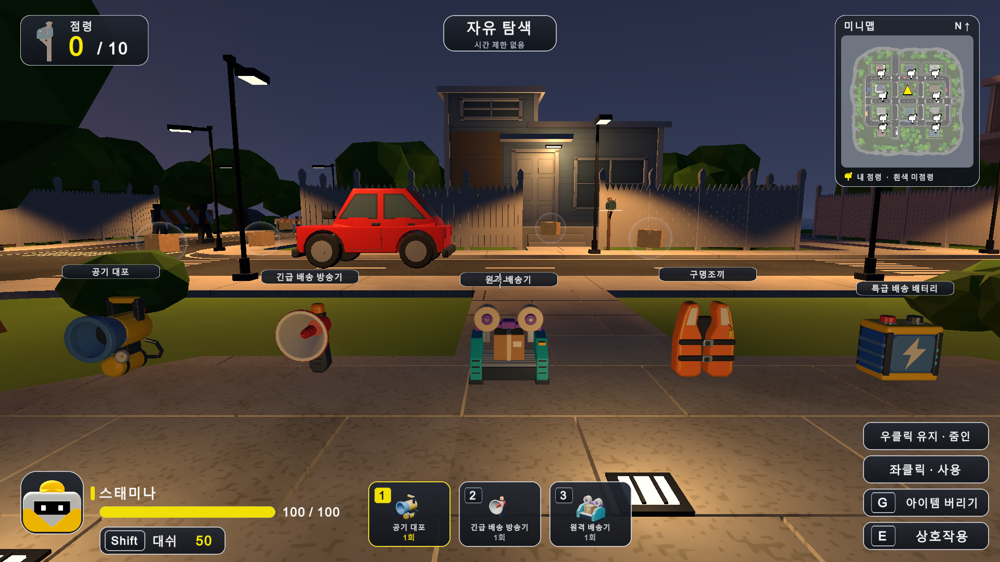
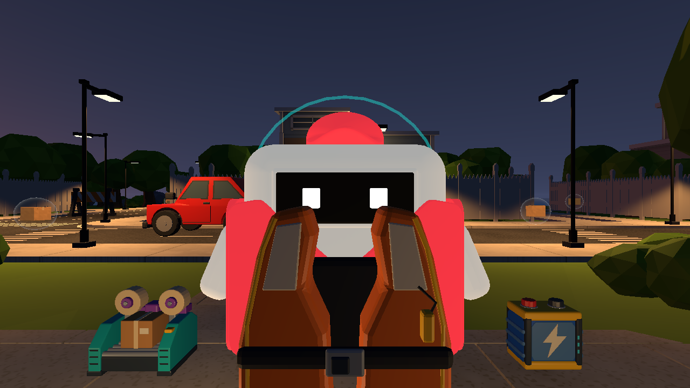
요청 공기 대포를 쏘면 슬라임처럼 포물선으로 날아가고, 떨어진 지점의 일정 범위 안에 있는 모든 상대가 날아가야 한다. 기존 전방12m 원뿔 즉시 피격을 제거하는 요청이다.
원인 기존 UseSpecialWeapon은 발사 순간 거리12m와 조준 방향 내적0.75 이상인 대상을 즉시 밀었다. 실제 대포 탄의 중력 비행이나 착지 범위 판정은 없었다. 이번 요청은 기존 오작동 수정이 아닌 공격 방식 변경이다.
방법 기존 BrawlShot 충돌과 NetShot 위치·속도·중력 동기화를 재사용했다. 슬라임과 같은 전방18m/s에 상승3m/s를 더해 발사하고, 처음 닿은 바닥·벽·캐릭터에서 한 번 폭발한다. 폭발 지점에서 캐릭터 충돌체 중심까지3차원 거리5m 이내의 모든 상대를 각각 검사해, 중심 바깥 방향 수평60m/s와 상승18m/s를 적용한다. 정확히 중심에 겹치면 시전자 반대 방향을 사용한다.
정책 본인과 아군은 제외한다. 벽으로 가려진 대상과 범위 밖·다른 층의 먼 대상은 제외하고, 캐릭터끼리는 폭발을 가리지 않는다. 공통 ApplyItemHit를 통해 에어캡1회 방어와 구명조끼 면역을 유지한다. 탄은 근접 장애물에도 터지며 사거리 고정값 없이 조준 각도·중력·지형에 따라 착지한다. 반경5m는 이번 테스트 기본값이다.1회 사용과 기존 대포 반동은 유지한다.
멀티 서버가 탄 물리와 최초 충돌 및 모든 피격을 확정한다. 참가자는 기존 최대100ms 표시 예측과 오차 감쇠로 물리 없는 공기 탄을 그린다. 착지 원형 파동은 기존 신뢰성 있는 impact 메시지로 전달하며 캐릭터 직격에도 전송한다. 참가자에서 같은 impact를 재생해도 힘을 적용하지 않는다. 프로토콜10으로 올려 서로 다른 동작 버전의 혼합 접속을 막았다.
검증 Unity6000.5.10f1 SampleScene Play에서 대포17항목, 기존3종·택배31항목,5종 테스트 행45항목 통과. 별도 두 Editor localhost에서 편도60ms 인위적 지연·20% frame/input 누락을 넣고 호스트8·참가자8항목을 통과했다. 양쪽 발사 후 착지·상대 상승·사용 소진·비행체와 폭발 표시·면역을 확인했고, 검사 중 런타임 오류0이다. 검사군 개수는 중복을 포함하므로 고유 사례 수로 합산하지 않는다.
재시도 첫 물리 검사에서 바닥을 통과했다. TrailRenderer를 가진 루트에 추가한 SphereCollider의 자동 중심이 실제 탄 중심과 다르게 잡힌 것이 원인이었다. center를Vector3.zero로 명시하고 궤적 초기값을 비워 수정했다. 최초 실패와 진단 로그는 evidence/air-cannon-offline-first.txt 및 air-cannon-collider-diagnosis.txt에 보존했다. 재촬영 전 방어 검사로 남은 시각 효과를 정리해 실제 피격 상태와 일치시켰다. 멀티 재촬영 검사에서는 참가자가 초기 코너 위치 프레임을 받는 시점을 검수용 위치 확정으로 잘못 해석한1개 실패가 있었다. 검사 시작0.5초 후부터 발사 전 위치를 비교하도록 도구만 보정하고, 호스트·참가자 각8항목 모두 다시 통과했다. 최초 로그는 evidence/air-cannon-connected/fixture-initial-frame-client.txt에 보존했다.
범위 실제 WAN·4인전·새 배포본 재빌드는 미실행이다. 별도 참가자의 기존 Unity Pipeline DLL 및 MPPM websocket 포트0 시작 오류2개는 이번 검사 시작 전 발생한 환경 오류이며 전투 검사 중 오류와 구별한다. 이전 사례03·04의 원뿔 대포와 프로토콜8·9 설명은 당시 이력이다. 현재 공원5종·시작3종·리스폰 정책은 유지한다.
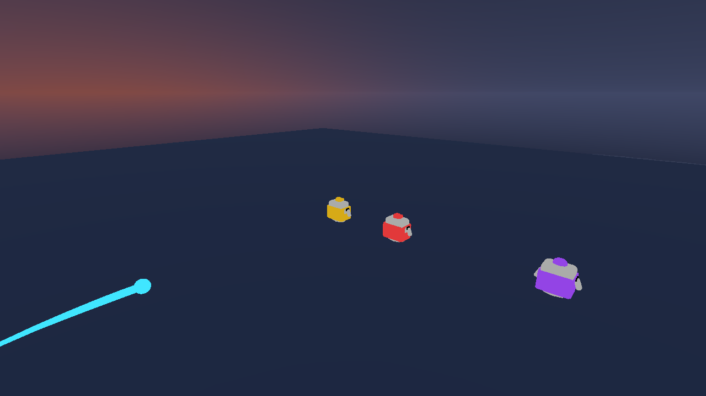
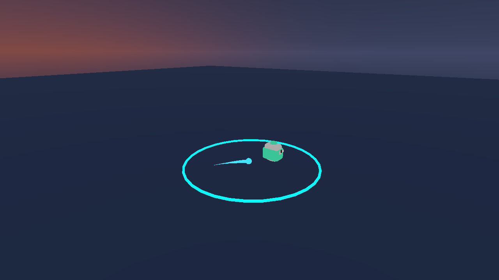
요청 사용자는 포물선 대신 빠른 직선 탄으로 바닥을 직접 맞추는 공격을 원했다. 자기 발밑에 쏘면 본인도 폭발로 날아가야 한다. 최초 범위 폭발 요구 R10에 이어 직선 비행 R11과 본인 피격 R12를 반영했다.
원인 직전 구현은 슬라임과 같은 전방18m/s에 상승3m/s와 중력을 사용했고, 범위 판정에서 source 자신을 제외했다. 따라서 탄이 휘어지고 본인 발밑에서 터져도 본인은 영향을 받지 않았다.
방법 Rigidbody의 중력과 선형 감쇠를 끄고 조준 방향으로 일정60m/s를 적용했다. 추가 상승 속도는0이다. 기존 BrawlShot의 연속 충돌·sweep와 최초 충돌1회 폭발을 유지했다. 빗나간 수평·공중 탄은60m에서 소멸시켜 서버와 참가자에 남지 않게 했다. 폭발은 기존 반경5m, 수평60m/s와 상승18m/s다.
정책 본인을 대상 제외 조건에서 제거하고, 본인에게는 아군 검사만 건너뛴다. 본인과 적 모두 폭발 중심에서 바깥쪽으로 밀리고 위로 뜬다. 정확히 본인 발밑 중앙에서 터지면 임의의 수평 방향을 보태지 않아 상승만 적용한다. 아군·벽 뒤·범위 밖 대상은 제외한다. 공통 피격 경로의 에어캡·구명조끼는 본인 피격에도 적용하며1회 사용과 기존 반동은 유지한다.
멀티 서버가 직선 탄의 물리·충돌·본인과 상대의 힘을 확정하고 프로토콜11을 사용한다. 기존 NetShot은 실제 Rigidbody의 중력 여부로 가속도를 기록하므로 참가자도 가속도0인 직선 비행을 표시한다. 신뢰성 있는 impact와 기존 위치·상승 동기화를 재사용하며 참가자의 impact 재생은 힘을 적용하지 않는다.
검증 실제 Unity6000.5.10f1 SampleScene Play에서 직선·본인 피격23항목, 기존 특수3종·택배31항목,5종 행45항목 통과. 별도 두 Editor localhost에 편도60ms 인위적 지연·20% frame/input 누락을 넣고 호스트11·참가자11항목을 통과했다. 양쪽의 바닥 적중 후 상대 상승 및 각각 자신의 발밑 발사·본인 상승·상대에게 보이는 위치·소모·면역·비행/폭발 표시를 확인했다. 수평 비행 높이 불변과 빗나간 탄 정리도 확인했으며 검사 중 런타임 오류0이다. 검사군은 중복을 포함하므로 합산하지 않는다.
재시도 첫 멀티 시작 때 참가자 Editor의 도메인 재등록 중 대상 선택이 실패했는데 검사 호출을 진행해 메인에 잘못 전달했다. 두 Play를 중지하고 정확한 두 인스턴스의 재등록을 확인한 뒤 각각 시작했다. 게임 코드는 이 재시도에서 바꾸지 않았다. 초기 포물선 버전의 충돌 보정·검사 실패 이력과9쪽 보고서는 source/case05/linear-before와 기존 evidence/air-cannon-*에 보존했다.
범위 이번 결과는 두 로컬 Editor와 인위적 지연·누락 조건이다. WAN·4인전·배포본 재빌드는 미실행이다. 참가자의 기존 Pipeline DLL·MPPM websocket 시작 오류2개는 전투 검사 전 환경 오류로 구별했다. 초기 사례05의 포물선·본인 제외·프로토콜10은 폐기한 이전 동작이며, 현재는 직선·본인 포함·프로토콜11이다.
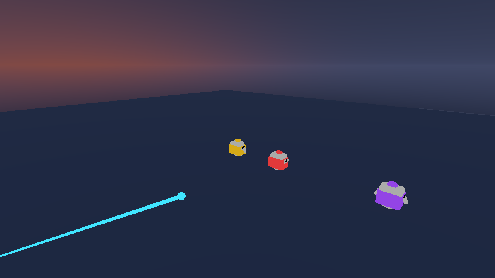
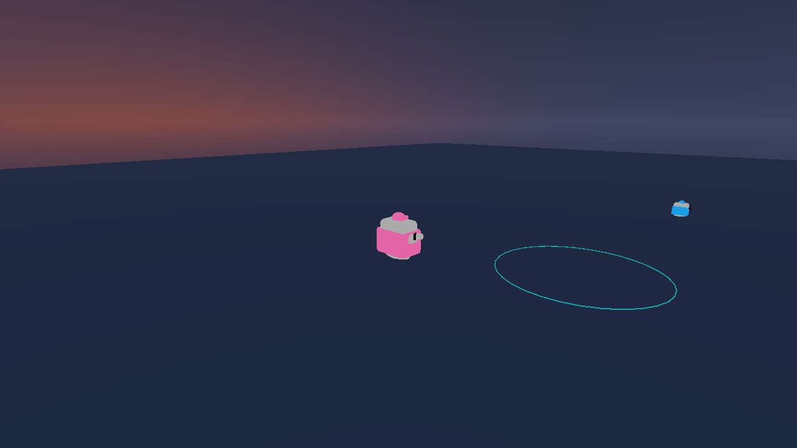
요청 사용자는 공기 대포의 폭발 반경을6m로 늘리고, 물체에 맞으면 터지는 이펙트를 넣어 달라고 요청했다. 직선 발사와 본인 발밑 발사 동작은 유지한다.
원인 직전 범위는5m였고, 충돌 연출은 바닥과 평행한 가느다란 원 하나가 전부였다. 순간 섬광과 파편이 없고 벽에 맞아도 표면 방향을 드러내지 못해 물체에 부딪혀 터지는 느낌이 약했다.
방법 공통 AirCannonRadius를5에서6m로 바꾸고 피격과 연출이 같은 상수를 사용하게 했다. 실제 충돌 위치에 AirCannonImpactFX를 생성해 순간 섬광1개, 부드러운 공기 파편28개, 서로 직교하는 충격파 원3개를 표시한다. 충격파는0.3초 동안6m까지 커지고 점점 흐려져0.65초에 객체와 전용 재질·텍스처를 정리한다. native ParticleSystem과 LineRenderer를 사용했다.
정책 바닥·벽·캐릭터의 실제 충돌점과 표면 법선을 사용한다. 벽 적중 시 주 충격파가 벽면을 향한다. 이펙트에는 Collider·Rigidbody를 붙이지 않아 추가 충돌이나 중복 피격을 만들지 않는다. 실제 피격은 캐릭터 충돌체 중심까지3차원 거리6m 이내이며 본인을 포함하고 아군·벽 뒤는 제외한다. 에어캡·구명조끼·본인 발밑 상승을 유지한다. 직선60m/s·최대 비행60m·수평60m/s·상승18m/s·1회 사용도 유지한다.
멀티 기존 impact 메시지의 충돌점과 표면 법선을 참가자의 새 이펙트 생성에도 전달했다. 서버만 최초 충돌·6m 피격을 확정하고 참가자는 같은 표면 방향으로 섬광·파편·충격파를 재생한다. 참가자 이펙트는 힘을 적용하지 않는다. 서로 다른 반경과 연출 버전이 섞이지 않게 프로토콜12를 사용한다.
검증 실제 Unity6000.5.10f1 SampleScene Play에서 대포29항목, 기존 특수3종·택배31항목,5종 행45항목 통과. 이전5m 밖이면서6m 안인 대상은 적중하고6m 밖은 제외했다. 실제 바닥·벽·캐릭터 충돌의 파편·충격파와0.65초 소멸을 확인했다. 별도 두 Editor localhost에서 편도60ms 인위적 지연·20% frame/input 누락을 넣고 호스트12·참가자12항목을 통과했다. 상대·본인 상승과 면역을 재확인하고 양쪽의 벽 적중 위치·표면 방향·파편·원3개를 확인했다. 최종 검사 중 런타임 오류0이다. 중복 검사군은 합산하지 않는다.
이력 이번 최종 대포·회귀·두 프로세스 검사는 모두 통과했다. 직전5m 직선 버전의 원문·소스·9쪽 보고서는 source/case05/burst-before에 보존했다. 포물선에서 직선으로 바뀐 이전 순서와 검증 실패·재시도는 README와 이전 evidence/air-cannon-* 및 source/case05/에 남겼다.
범위 WAN·4인전·배포본 재빌드는 미실행이다. 참가자의 기존 Pipeline DLL·MPPM websocket 시작 오류는 시험 시작 전 환경 오류로 구별했다. 현재는6m·입체 폭발·프로토콜12이며, 앞선5m와 프로토콜11 설명은 당시 이력이다.
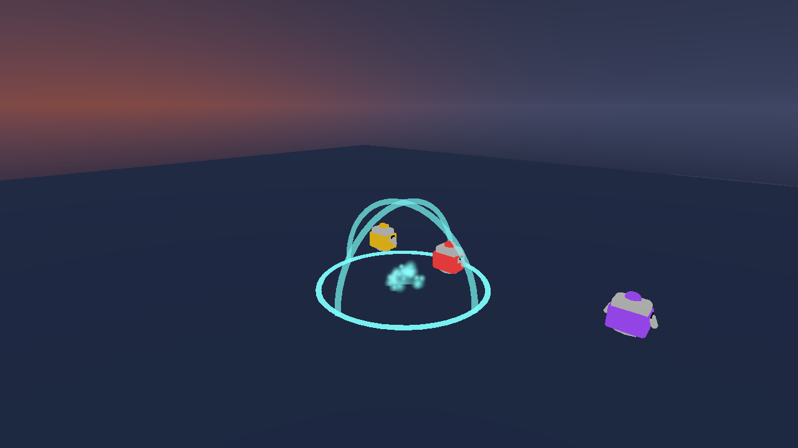
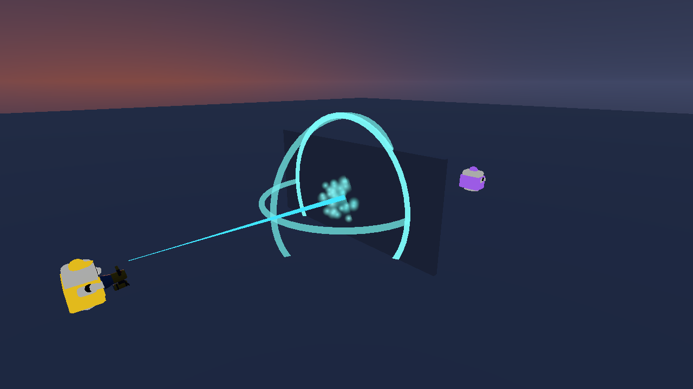
2026년 10월 19일 · R15, R16 · 수치 조정 및 연출 개선 · 해결 완료
기절 시간을 4초로 바꾸고 지나치게 간결한 사용 이펙트를 더 화려하게 해 달라는 요청이다. 이전 방송기는 3초 기절과 얇은 수평 원 하나를 사용했다. 수정 전 화면은 없으며 이전 코드와 9쪽 보고서를 source/case06/before에 보존했다.
공통 사용 판정의 방송기 기절값이 3초였고, SpecialDeliveryPulse가 방송기와 포장기를 함께 처리하면서 방송기에는 원 하나만 그렸다. 겹쳐 퍼지는 음파·입체 파동·경고등·불꽃 표현이 없었다.
공통 BroadcasterStunSeconds를 4로 정의해 로컬과 서버 판정이 함께 사용한다. 전용 BroadcasterFX에는 시간차로 퍼지는 수평 음파 3겹, 수직 반원 파동 2개, 회전하는 중앙 경고 원, 방사형 음파 8줄, 주황색 점멸 광원과 금빛 불꽃 40개를 넣었다. native LineRenderer·ParticleSystem·Light를 사용하며 연출은 1.3초 뒤 객체와 전용 재질을 정리한다.
12m 안의 보이는 상대에게 적용하며 본인·아군·벽 뒤는 제외한다. 에어캡 방어와 소모, 구명조끼 면역, 기절 후 2초 면역을 유지한다. 사용 횟수는 1회이며 마지막 사용 후 0.6초 반동이 끝나면 슬롯과 모델이 정리된다. 이펙트에는 Collider·Rigidbody가 없어 추가 피격을 만들지 않는다.
기존 서버 권한과 actionAt 전송을 재사용한다. 참가자는 수신한 동작의 경과 시간부터 파동과 불꽃을 재생하고 반복 스냅샷은 중복 생성하지 않는다. 연출이 기절이나 힘을 별도로 적용하지 않는다. 기절 규칙과 연출 버전이 다른 참가자가 섞이지 않게 프로토콜을 12에서 13으로 올렸다.
Unity 6000.5.10f1 SampleScene 실제 Play에서 방송기 17항목, 기존 특수 3종·택배 31항목, 공원 5종 행 45항목 통과. 별도 두 Editor localhost에 편도 60ms 인위 지연과 20% frame/input 누락을 넣어 호스트 9·참가자 9항목 통과. 양방향 최대 기절값은 모두 4초였으며 해제·소모·면역·연출·중복 방지·정리를 확인했다. 검사 중 런타임 오류 0. 검사군은 중복을 포함하므로 합산하지 않는다.
이번 실제 게임 검사는 재시도 없이 모두 통과했다. 소스 편집 스크립트에서 기본 문자 인코딩 읽기가 한 번 실패해 UTF-8로 읽도록 고친 뒤 남은 편집을 적용했다. 이는 실행 중 게임 오류가 아니다. 이전 보고서와 코드 사본을 보존했다.
실제 외부망·4인전·배포본 재빌드는 미실행이다. 참가자 시작 때의 기존 Pipeline DLL·MPPM websocket 환경 오류 2개는 전투 검사 전 오류로 구별했다. 정지 화면은 연출 확인용이고 판정과 시간은 실행 로그로 확인했다. 공기 대포는 기존 직선 60m/s·반경 6m·본인 발밑 상승을 유지한다.
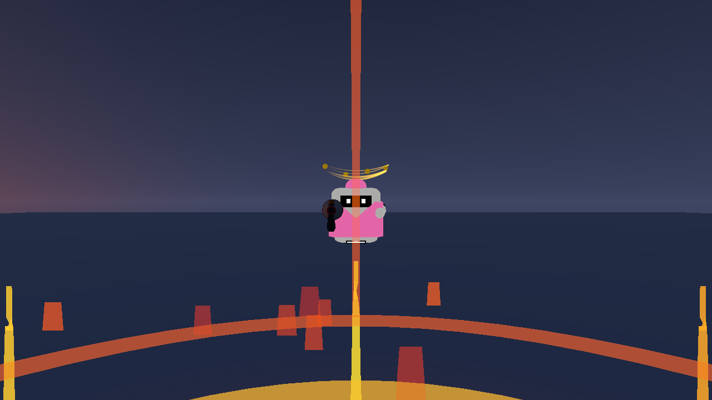
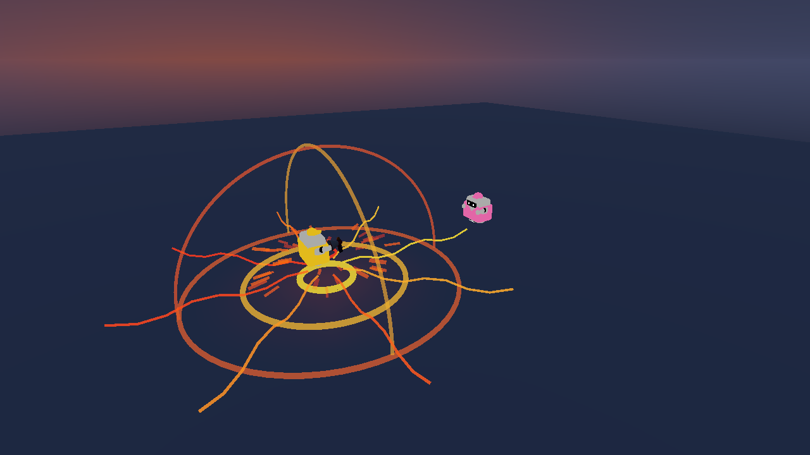
검수용 위치·카메라로 촬영한 실제 두 Editor 화면. 시간과 판정은 실행 로그 참조.
호스트 검사 · 참가자 검사